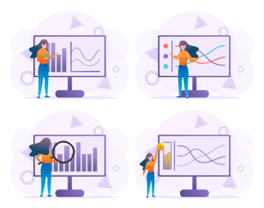

MONITORE SUA VINÍCOLA
Com tecnologia de ponta, uma interface simples, oferecemos
soluções que colocam o monitoramento de umidade
e temperatura da sua vinícola em suas mãos,
garantindo a preservação da
qualidade e valor do seu vinho.
TECNOLOGIA PARA MONITORAMENTO
Monitore com eficácia os níveis de temperatura e umidade
na armazenagem de vinhos em barricas


• Monitoramento Contínuo
Acompanhe em tempo real a temperatura e a umidade da sua vinícola.
• Alertas Imediatos
Receba notificações instantâneas se as condições saírem dos parâmetros ideais.
• Análise de Dados
Acesse históricos e relatórios detalhados para otimizar o armazenamento do vinho.
• Interface Intuitiva
Controle todas as funcionalidades através de uma plataforma simples e acessível.
PROBLEMAS DE ARMAZENAMENTO
Típicos problemas de armazenamento em vínicolas

• Evaporação e redução do teor alcoólico
• Possibilidade de seca dos barris
• Custos de mão-de-obra na manutenção
dos barris
• Perda de qualidade dos vinhos.
• Dimuição da produtividade.
Quem somos?
Somos a WineGuard, uma empresa comprometida em fornecer soluções tecnológicas
avançadas para aprimorar o monitoramento e o armazenamento de vinhos em vinícolas.
Acreditamos que, por meio de nossos sistemas, os gestores de vinícolas podem tomar decisões
mais
estratégicas, baseadas em dados em tempo real, otimizando processos e minimizando
perdas.
Nosso objetivo é monitorar seu negócio, visando proteger seu patrimônio e ajudando a
preservar a integridade e o valor dos vinhos ao longo do tempo. Seja para pequenos produtores
ou
grandes vinícolas, nossas soluções se adaptam às suas necessidades , trazendo
modernidade
e confiabilidade para cada etapa do processo de produção e armazenamento.
Missão
Nossa missão é garantir a preservação da qualidade dos vinhos por meio das soluções
ecnológicas inovadoras. Buscamos proporcionar eficiência no monitoramento ambiental,
ajudando vinícolas a manter as condições ideais de armazenamento e promovendo a
sustentabilidade em
cada etapa do processo. Queremos ser parceiros na proteção do seu
patrimônio, assegurando
longevidade e excelência para cada garrafa.